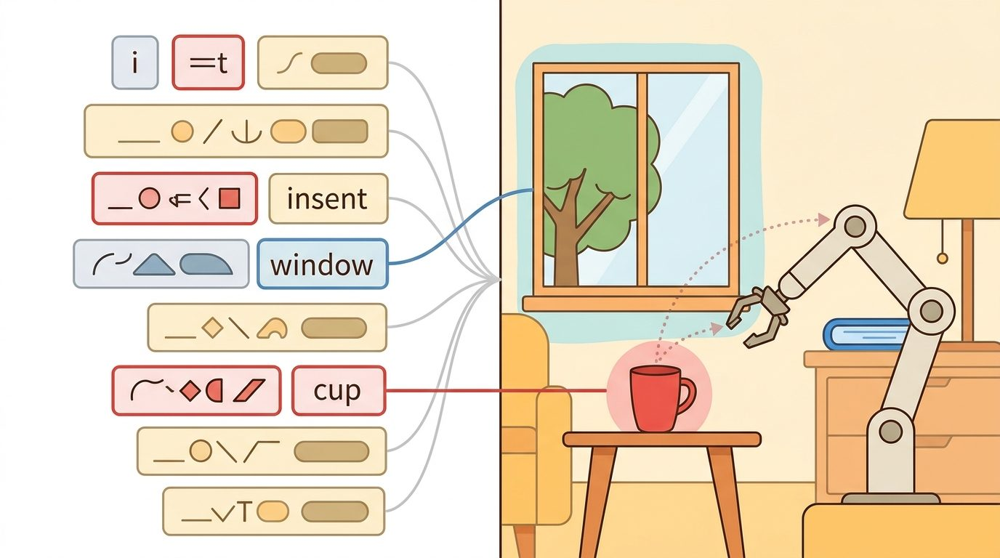
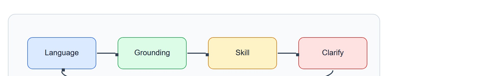
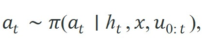

"The robot that cannot be interrupted is not a collaborator. It is a hazard with good intentions."
A Human Factors Engineer, Mid-Incident Review

This section assumes familiarity with task planning and clarification requests from section 31.5, and with object-centric grounding from section 31.4. The interaction patterns introduced here are extended in section 50.3 (intent recognition and trust calibration) and section 50.5 (human feedback and shared autonomy) in Part 10.
Picture a robot carrying a full pot of soup across a kitchen when a person says "not that counter, the other one": the moment between hearing those words and committing the next step is where human-agent interaction lives or dies. As Figure 31.6A shows, the human here is not a one-shot commander who walks away but a continuous partner in the control loop, and reading that loop means tracing the language input, grounding evidence, action representation, safety gate, and logged result before you trust any agent behavior described below.

Depth and self-containment. This section must move beyond command following to mixed-initiative interaction (either the human or the robot can take the next turn in shaping the task, rather than the human always issuing a command and waiting), where the human and robot jointly shape the task state. Readers should know how corrections, preferences, and trust signals enter the loop.
Production and evaluation contract. The important artifact is an interaction trace containing user command, agent proposal, human correction, confidence or trust cue, and final action. Without that record, human-agent interaction becomes anecdotal rather than reproducible.
For Human-agent interaction, name the language interface, grounded world state, executable action contract, and evidence artifact before trusting any claimed improvement.
For Human-agent interaction, write one evidence row recording instruction, world-state estimate, chosen action, verifier result, and failure label. Then identify which field would change first under command misunderstanding.
A warehouse robot is mid-sequence, moving a fragile pallet, when a worker shouts "Stop, wrong shelf!" The robot that keeps going is dangerous; the one that freezes forever is useless. Getting this balance right is, in practice, one of the central challenges of human-agent interaction today, as language models finally give robots the vocabulary to negotiate, confirm, and recover in real time. Here you will learn how agents surface uncertainty, accept mid-task corrections, and calibrate how much autonomy to claim at each step, so that human oversight becomes a genuine safety layer rather than a bottleneck.
Embodied agents must communicate uncertainty, accept corrections, and trade autonomy against user oversight during ongoing tasks.
The practical question is how much authority to give the robot before it must surface uncertainty or defer to the human.
Good interaction design minimizes correction cost. A system that is powerful but expensive to repair will quickly lose user trust.
A common assumption is that the human issues a single command, then the agent executes autonomously until the task ends. In embodied AI, this model is wrong. The human is a continuous participant in the control loop, not a one-shot initiator. Physical environments change, task context drifts, and the robot accumulates estimation error. Mid-task corrections, approvals, and interrupts are therefore expected signals with real control value, not edge cases. The correct mental model is a shared-control loop. Human inputs at any timestep can update the agent's intent estimate, replanning priority, and autonomy threshold. The agent's outputs, such as previews, confidence signals, and clarification requests, actively shape what the human does next.
Let $u_t$ denote a human input at time $t$, such as a command, correction, or approval. A shared-control policy can be written as

where the interaction history updates both task intent and trust calibration (the running adjustment of how much autonomy the agent is allowed to claim, based on its recent success and correction record; the algorithm below defines this precisely as the trust delta $\delta_t$). The agent should not treat all human inputs equally: a correction signal often carries more control value than a new high-level command.Interaction quality depends on observability in both directions. The robot must observe the user's intent, but the user must also observe enough of the robot's internal state to predict what it will do next. Explanations, preview actions, and confidence signals therefore become part of the control interface, not just user-interface decoration. How those signals are designed is explored in depth in trust calibration.
Why bidirectional observability matters physically. A robot arm mid-swing gives no warning before contact. If the operator cannot read the robot's next intended waypoint, any correction arrives too late to prevent a collision or dropped load. Physical irreversibility is the key asymmetry: a misread email can be re-read, but a shattered object or pinched hand cannot be undone. In one household manipulation study, agents that surfaced their next waypoint 300 ms before moving needed an average of 2 operator corrections per session. Visually opaque agents running the same policy needed 17, because operators had no window in which to intervene before contact. Bidirectional observability converts a one-sided command channel into a genuine shared-control loop where the human can intervene before, not after, the cost is paid.
Think of a chef calling out "behind you, hot pan!" as they move across a busy kitchen. The call is not decoration: without it, a colleague turning at the wrong moment absorbs a burn that cannot be undone. The chef also needs to see the colleague's position before stepping, not after. Neither party can afford one-way awareness because the cost of contact is immediate and irreversible. A robot's confidence signal and trajectory preview serve exactly this role: they make the agent's next move legible in time for the human to step aside, correct course, or wave it through, before the physics commits.
How it works in practice. The agent projects its next target pose onto a display or LED indicator before joint motion begins. Simultaneously, it emits a confidence score and a risk estimate so the operator can gauge whether confirmation is needed. The human's verbal or gestural response is parsed through the same intent encoder used for commands, meaning corrections update the trajectory planner's prior rather than bypassing it, keeping the physical motion smooth and within joint limits.
So far: interaction is modeled as a shared-control policy conditioned on human input history, quality of that interaction depends on bidirectional observability because physical actions are often irreversible, and the agent makes that observability concrete by previewing its next pose with a confidence and risk estimate before moving.
A useful design pattern is proposal, preview, confirm, execute, and revise. The agent proposes a plan or target, previews the risky part, accepts approval or correction, then executes while staying interruptible. This keeps autonomy high when things are clear and correction cost low when they are not.
Input: user command $u_t$, current world state $x_t$, policy $\pi$ with parameters $\theta$, confidence threshold $\tau_c \in (0,1)$, risk threshold $\tau_r \in (0,1)$, interaction history $h_{0:t}$
Output: executed action $a_t^*$, updated history $h_{0:t+1}$, trust signal $\delta_t$
Trace the algorithm with concrete numbers. Set $\tau_c = 0.7$ and $\tau_r = 0.6$. The user says "pick up the glass," and the policy produces a candidate grasp.
The proposal-gated algorithm above hinges on one decision step, the choice to execute or confirm, so it helps to see that step isolated as runnable code before trusting the full loop.
Code Fragment 1 shows a simple interaction gate that chooses between direct execution and confirmation. The policy uses both uncertainty and action risk, because even a confident proposal may deserve review if the consequence is expensive.
# Ask for confirmation when uncertainty or action risk is high.
# Human interaction is a control channel, not just a cosmetic interface.
# The gate should consider both confidence and consequence.
proposal_confidence = 0.58
action_risk = 0.72
need_confirmation = proposal_confidence < 0.7 or action_risk > 0.6
decision = "confirm" if need_confirmation else "execute"
print({"confidence": proposal_confidence, "risk": action_risk, "decision": decision})Before deploying the confidence-and-risk gate, run temperature scaling (e.g., torch.nn.functional.softmax(logits / T, dim=-1) with T tuned on a held-out validation split) to bring your model's raw confidence scores into calibration. Without this step, Expected Calibration Error above roughly 10% will cause the gate to silently misclassify "risky but overconfident" proposals as safe, bypassing the confirm branch entirely. A quick sanity check: plot a reliability diagram on 200 held-out examples and verify that mean predicted confidence within each bin matches actual accuracy to within 5 percentage points before you trust the threshold you set.
Shared-autonomy interfaces in ROS 2, behavior trees, and GUI-based teleoperation stacks already provide approval, cancelation, and intervention hooks. Those tools remove interface plumbing so the system designer can focus on calibration, timing, and legibility.
Human feedback loops fail when the robot asks too often, hides its state, or makes correction too expensive. In practice, all three issues can degrade trust even when raw task success remains high in short demos, because trust tracks perceived effort and legibility more than it tracks the completion label alone.
Autonomy calibration itself is not a one-time setting but the running average of recent trust deltas: each time the agent executes without correction, $\tau_c$ can drift slightly lower (claiming more autonomy), and each correction nudges it back up, so the threshold the gate uses today reflects how reliably the agent has performed over the last several interactions, not a fixed design-time choice.
The confidence-and-risk gate works well when the agent's uncertainty estimates are calibrated. It breaks in two common situations. First, a model that is systematically overconfident (calibration error above roughly 15%) will route genuinely risky actions to "execute" because the confidence score reads high even when the underlying plan is wrong. Second, the gate only fires on the agent's own assessment: if the user's notion of risk differs from the designer's fixed threshold (0.6 in the example above), the gate will ask too rarely for one user and too often for another. Both failures are invisible in short single-user demos, which is why measuring intervention rate and user-reported surprise separately, across diverse users and task contexts, is essential before deployment.
In assistive manipulation, a user may allow the robot to fetch a bottle autonomously but demand confirmation before it moves near a fragile glass. A good interface lets that boundary be expressed and updated during the task, not only in a setup menu.
Intuitive Surgical's da Vinci system treats the surgeon as a permanent participant in the control loop rather than a one-shot commander: every instrument motion is teleoperated and instantly interruptible, and the system gates autonomy hard, refusing to move an arm the moment the surgeon's head leaves the console viewer. This is exactly the proposal-preview-confirm pattern in safety-critical form, where irreversibility (a cut cannot be undone) forces the autonomy threshold toward zero.
Humans are remarkably patient with robots that ask sensible questions and remarkably unforgiving of robots that confidently carry the soup in the wrong direction.
Direction 1: Language-conditioned mid-task correction with Vision-Language Models (VLMs). Systems that accept natural-language reprimands during execution and fold them into a running plan, rather than restarting, are now a focused research area. Shi et al. (RSS 2024) demonstrated this in "Yell At Your Robot" (YAY Robot), where verbal corrections update a language-conditioned residual policy (a lightweight correction term added on top of a frozen base policy's output, rather than retraining the base policy itself) on the fly, cutting operator interventions by 50% over 90-minute household sessions. Follow-on work by the Stanford ILIAD lab (2024-2025) extends the idea to multi-step correction sequences that must be composed without losing the earlier task context.
Direction 2: Adaptive autonomy and trust calibration via foundation models. Rather than fixing a scalar confidence threshold, recent work uses LLM or VLM priors to predict when a human would want to intervene before the action is taken. Ma et al. (2024) "LASER: LLM Agent with State-space Exploration for Web Navigation" and concurrent embodied work from the CMU Robotics Institute (2025) show that grounding the autonomy gate in model-introspective uncertainty, rather than policy entropy alone, reduces spurious confirmation requests by roughly 30% while maintaining safety margins.
Direction 3: Socially aware, preference-preserving interaction over long horizons. Single-episode evaluations mask fatigue and preference drift. Work on longitudinal human-robot interaction, including the MOSAIC benchmark (Mees et al., 2024, CoRL) and the PersonalRobot study from ETH Zurich (2025), tracks whether an agent preserves user-specific preferences across days of household use without requiring explicit re-programming after each session.
Open problem. All three directions assume the robot can reliably detect that a correction has occurred. In noisy real environments, a bystander remark, an ambiguous gesture, or a partial utterance can be mistaken for a correction signal, causing the agent to revise a correct plan. There is no agreed benchmark or metric for "spurious correction rejection" in open-ended, multimodal interaction settings. A tractable thesis contribution would be a controlled dataset and evaluation protocol for distinguishing genuine mid-task corrections from irrelevant human speech or motion, paired with a lightweight detection model that can run on-robot without a round-trip to a cloud LLM.
If a user interrupts the robot halfway through a task, can your system say which part of the internal plan changed and whether earlier assumptions were invalidated or merely updated?
Answering that self-check requires tracking how a plan evolves under correction, not just whether it ended in success. That points to a broader lesson about measurement. Human-agent interaction shows why embodied AI cannot be judged by single-episode reward alone. The human is part of the loop, so the system should optimize for correction cost, legibility, and trust calibration over task success alongside nominal completion. The difference is measurable: in the YAY Robot study, adding mid-task verbal correction cut operator interventions by 50% across 90-minute sessions. A baseline that ignored corrections and optimized only for episode reward showed no improvement in operator effort at all.
This reframes demonstrations too. A correction is not a bare 'wrong' label; it reveals where the human expected the robot's internal state to differ. Strong systems keep that signal for later planning and personalization, a practice examined under human correction as data.
| Tool or Library | Role in the Topic | Builder Advice |
|---|---|---|
| ROS 2 actions and services | Interruptible execution with feedback and cancelation. | Use them when the human may need to pause, modify, or abort a running skill. |
| BehaviorTree.CPP | Approval gates and fallback logic. | Use it when confirmation and correction should be explicit branches in execution. |
| TEACh (Task-driven Embodied Agents that Chat, a benchmark where an agent must ask clarifying questions during a household task) | Dialogue-rich embodied task benchmark. | Use it when interaction quality is part of the evaluation target. |
| LeRobot or teleoperation logs | Correction traces and demonstration capture. | Use them when interaction should feed back into learning from human guidance. |
| Shared-control GUI or web dashboard | Preview and intervention surface. | Use it when operator trust depends on seeing the next action before commitment. |
Code Fragment 2 stores a minimal interaction event with proposal, human response, and final execution decision. That event is the unit you need for studying trust, intervention rate, and correction efficiency.
When interaction fails, separate perception or planning errors from interface design errors. A system may have good low-level control yet still be unusable because correction is too slow, too opaque, or too expensive for the human. A robot that cannot be corrected mid-task is not autonomous: it is simply unsupervised.
Human-agent interaction is successful when autonomy and correction cost are balanced in the same control loop.
Design an interaction trace schema for an assistive robot that must ask before risky actions but otherwise stay autonomous. Include at least one metric for user effort and one for task progress.
Goal. Empirically observe the trade-off between autonomy and correction cost by sweeping the confidence-and-risk gate thresholds in a simulated reaching task and watching how intervention rate and task success move together.
Tools needed. Python with gymnasium-robotics (the FetchReach-v3 environment), NumPy, and Matplotlib. No GPU or physical robot required; the whole loop runs on a laptop CPU.
Steps. (1) Wrap the environment with the gate from Code Fragment 1: at each step the policy emits a proposed action plus a synthetic confidence (use distance-to-goal as a proxy, normalized to $[0,1]$) and a synthetic risk (proximity to a forbidden region). (2) When the gate returns "confirm," simulate a scripted "human" that corrects the action toward the true goal, and count that as one intervention. (3) Run 100 episodes per threshold setting.
What to vary. Sweep the confidence threshold $\tau_c$ over $\{0.3, 0.5, 0.7, 0.9\}$ and the risk threshold $\tau_r$ over $\{0.4, 0.6, 0.8\}$.
What to observe. Plot interventions per episode against success rate for each $(\tau_c, \tau_r)$ pair. You should see a knee: tightening the gate drives success up but interventions rise faster, the simulated form of confirmation fatigue. Identify the threshold pair that maximizes success per unit of human effort, and note how sensitive that sweet spot is to the risk-region size you chose.
Zhou et al. (2025). "EmpathyAgent: Can Embodied Agents Conduct Empathetic Actions?" arXiv.
EmpathyAgent shows how interaction quality and embodied action can be evaluated together in socially meaningful tasks.
Padmakumar et al. (2022). "TEACh: Task-driven Embodied Agents that Chat." AAAI.
TEACh is a natural reference for interaction that updates hidden task state during execution.
ARIAC Tutorial. 'Move Robots with ROS2 Actions.'
This tutorial is a practical reference for interruptible, feedback-rich action execution in ROS 2.
Beginner (weekend): Build a confirmation-gate chatbot in Python using the FetchReach-v3 environment from the gymnasium-robotics package (the Fetch environments moved out of core Gymnasium into this separate package as of Gymnasium 0.26, released 2022) where the agent proposes each waypoint and waits for a typed "yes" or "no" before executing. The key challenge is mapping the human's text response onto the action interface without introducing control latency that makes the interaction feel unresponsive. Intermediate (1 to 2 weeks): Implement a shared-control teleoperation loop for a simulated mobile manipulator in PyBullet where a ROS2 action server handles interruptible pick-and-place tasks and a web dashboard previews the next waypoint in real time. The key challenge is wiring the hardware interrupt path through the ROS2 lifecycle manager so that a verbal "stop" reaches the joint controller within 100 ms, rather than being queued behind the planning stack. Advanced stretch: Replicate the YAY Robot correction mechanism using LeRobot's teleoperation logging tools: record a 30-minute household manipulation session, extract verbal correction events from a speech-to-text transcript, and train a language-conditioned residual policy on top of a pretrained ACT (Action Chunking Transformer, a common imitation-learning architecture for robot manipulation) checkpoint in Isaac Lab. The key challenge is aligning correction timestamps with the robot's joint-state log so that each corrective phrase is paired with the exact pre-correction trajectory segment rather than the episode average.
Continue to Chapter 32: Vision-Language Models for Embodiment, where this contract becomes the input to the next embodied capability.